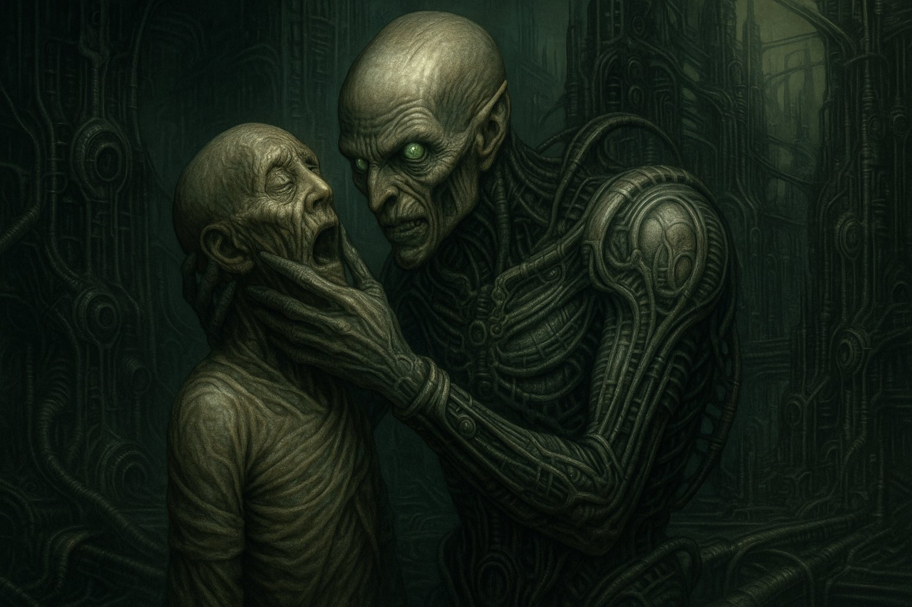
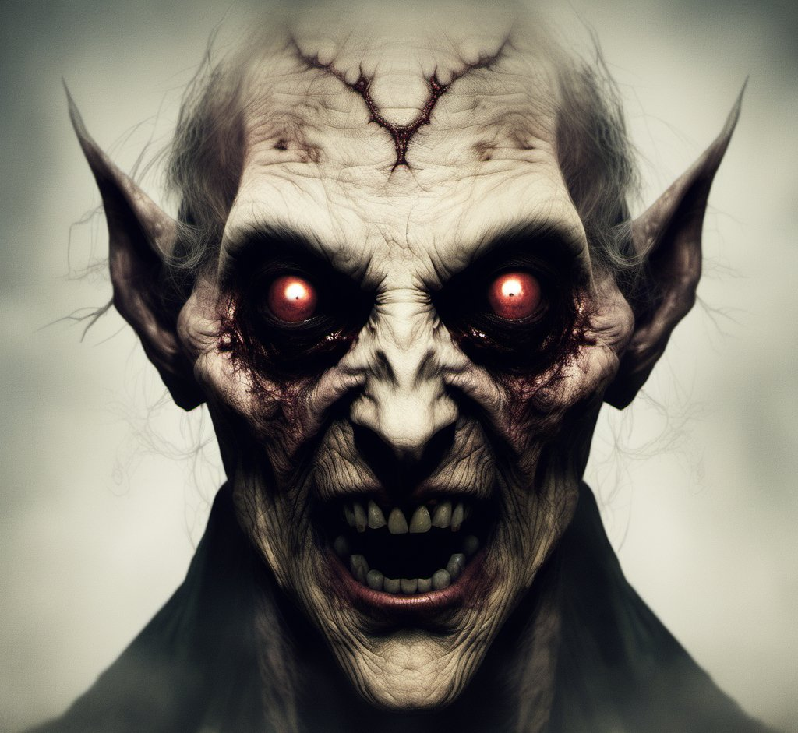

The Senescence are not mere vampires. They are aglet assassins, chronophagic parasites with a voracious thirst for DNA. Silent thieves, they sip protective caps from every chromosome, stealing not just years, but every tomorrow encoded in the victim's cells.
They are preternatural vampiric humanoids whose near-immortality is bought through predation on humanoids and animals alike.
They feed by attacking telomere nucleotides at the ends of chromosomes, inducing rapid, immediate ageing in their victims. This is no random curse; it exploits the natural end-replication problem of DNA.
Each cell division already shortens telomeres slightly. The Senescence accelerates the process exponentially, forcing chromosomes to unravel at a catastrophic rate.
Exactly how they manipulate DNA to trigger this cellular catastrophe remains unknown. It is a closely guarded secret. Revealing it is punishable by death, even for the traitor's entire family line across all current generations.
The victims scream, frozen in time's amber as their life force is siphoned from their telomeres by the Senescence. These soul eaters, spirit devourers, drink life force like a shot in a short glass.

After the Senescence knocks back its shot—its victim's every tomorrow—a slight, almost imperceptible Mephistophelean grin slithers across its face. That is the moment the mask slips. Not rage, not ecstasy, just quiet, cultured satisfaction. A connoisseur appreciating a particularly fine vintage.
The victim floats to the ground like a feather and shatters into dust. It is as though the shot glass has taken one last breath before crumbling into powder. This powder drifts away in the moonlight, carried by a sweet moon-kissed zephyr. Nature is a silent collaborator in this beautiful terror.
The Senescence feed once every six months. In that single draught, they are imbued with exuberant, reinvigorated youthfulness. They are empowered with the abundant vitality of an athlete in their prime.
They become immeasurably stronger, faster, and quicker of thought. They are incredibly flexible. Whether the Senescence is one hundred or one thousand years old, the effect is the same: a renewed, vibrant body that betrays no trace of the centuries it has stolen.
The Senescence walk freely in sunlight. They would laugh as a wooden stake splinters against ribs that regenerate faster than any wound can bleed. Holy water, crosses, silver, garlic, and mirrors that don't reflect, none of it matters.

They have no curse to break, no soul to damn. Their biology is so thoroughly hacked that the old Gothic weaknesses are no more than quaint superstitions.
If a victim survives the attack, they do not die quickly. They become old and frail overnight, riddled with the diseases and frailty of extreme age. It is something akin to progeria, but crueler, because it was inflicted in moments rather than years.
This is the Senescence: not cursed immortals, but architects of borrowed dawns. They feed on futures and leave behind dust that the wind politely carries away.
© 2026 James Armstrong. All rights reserved.